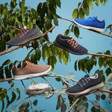

Design, conforto e sustentabilidade
Você está pronto para o tênis do futuro ?
Estilo e Simplicidade
Combinam com qualquer estilo e você vai querer usá-los todos os dias, cores vivas, vibrantes ou discretas, as cores da natureza ao seu alcance. Por que não comprar um de cada cor?
Pode ser para o trabalho ou caminhada no fim de semana. Quando você experimentar, não terá duvidas de que 4Comfort é o seu par ideal.
Sapatos reais para pessoas reais
Conforto e Sustentabilidade
4Comfort foi criado pensando em você e no mundo que você vive. Possuem um design que se ajusta ao formato de seus pés, e na 4Comfort você encontra o tamanho ideal para você. Alguns de nossos clientes descrevem a sensação de usar 4Comfort como: "É como se você estivesse pisando nas nuvens". 4Comfort é simplesmente uma nova definição de conforto.
Nosso compromisso é com você e com o meio ambiente. Nós nos preocupamos profundamente com a forma como nossos produtos são feitos e como eles impactam o meio ambiente. .
O que estão dizendo sobre 4Comfort
Os melhores sapatos para caminhar de todos os tempos
Fiz uma longa caminhada com meus 4Comfort, tudo o que consegui foi um buraco na meia.
Os melhores sapatos de caminhadas de todos os tempos
- Cristina Junqueira | NuBank.
Depois que comprei, só tenho olhos pra ele
Comprei um par porque gostei do estilo, mas quando eu usei, percebi que não é apenas estilo e design. Eles são perfeitos!!
Só tenho olhos pra ele, com certeza irei comprar mais alguns pares.
- Bia Granja |YouPix.
É como se estivesse caminhando nas nuvens
A primeira vez que experimentei 4Comfort, não acreditei que pudesse existir um tênis tão lindo e confortavel ao mesmo tempo. Era como se eu estivesse andando nas nuvens.
- Nina Silva | Movimento Black Money .
Meu companheiro de todos os dias
Não tiro mais dos pés!! Foi a melhor compra que fiz, chegou super rápido.
4Comfort é meu companheiro de todos os dias
- Camila Achutti | Ponte21.